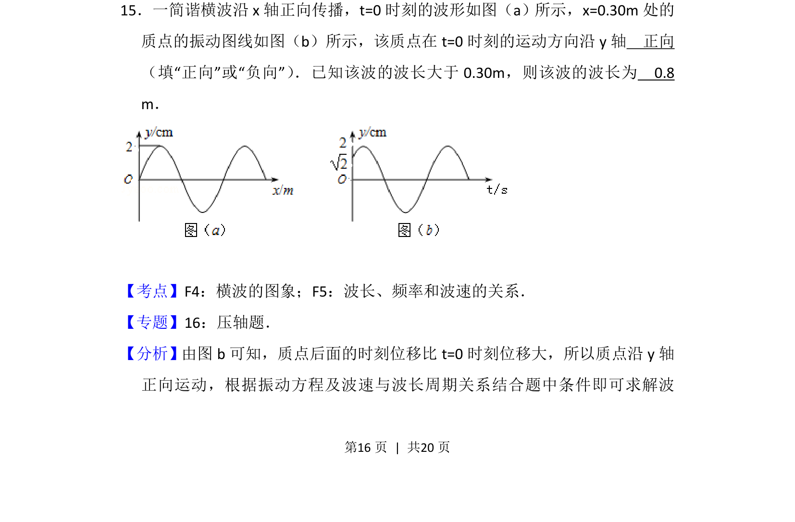
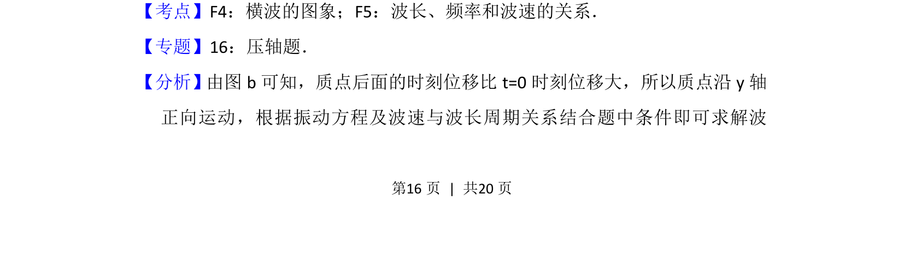
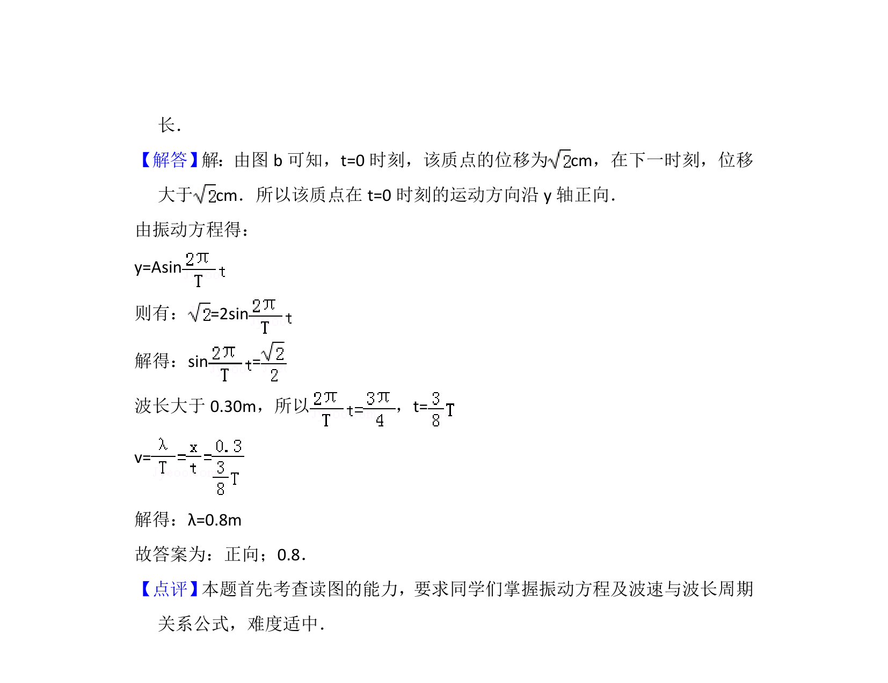

考点：横波的图象 波长 频率和波速的关系

根据振动图像判断质点运动方向，结合波长条件求解波长。


📄 原 PDF 第 16 页：
素材/真题/吉林/2008-2024·（吉林）物理高考真题/2012年高考物理试卷（新课标）（解析卷）.pdf
15．一简谐横波沿x轴正向传播，t=0时刻的波形如图（a）所示，x=0.30m处的 质点的振动图线如图（b）所示，该质点在t=0时刻的运动方向沿y轴 正向 （填“正向”或“负向”） ．已知该波的波长大于0.30m，则该波的波长为 0.8 m．
【考点】F4：横波的图象；F5：波长、频率和波速的关系．菁优网版权所有 【专题】16：压轴题． 【分析】由图b可知，质点后面的时刻位移比t=0时刻位移大，所以质点沿y轴 正向运动，根据振动方程及波速与波长周期关系结合题中条件即可求解波